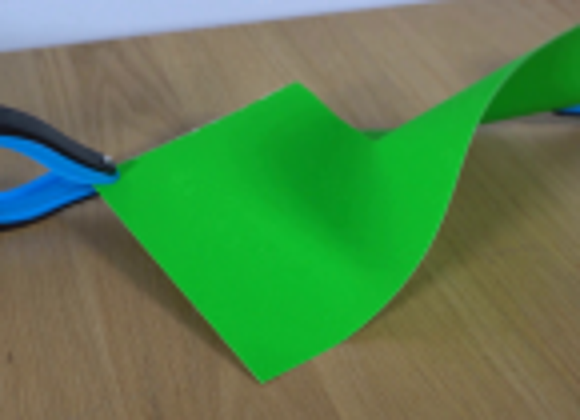
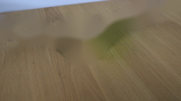
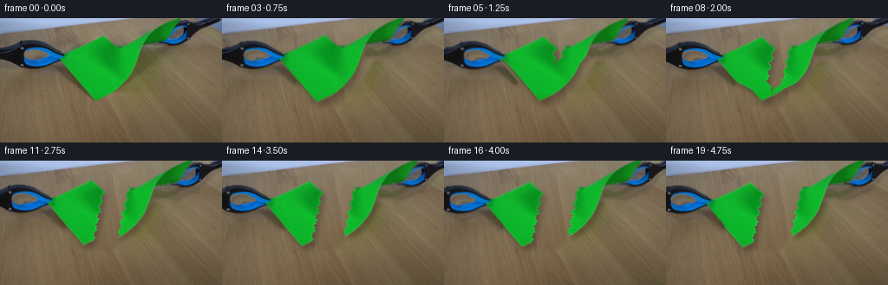
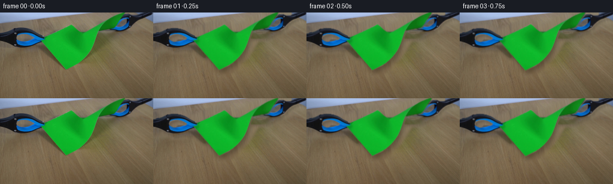
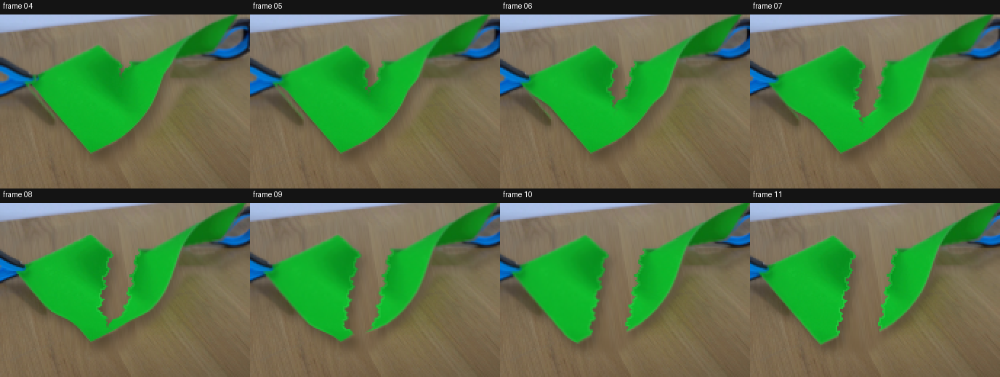

CODING AGENTS AS PIXEL WORLD MODELS
traex/GPT-5.6-Sol · 0043
点击播放 · 原生 RGB 像素
逐轮保存的候选
回放视频、检查图与代码变化。
每份候选均可单独播放。实际图片检查记录在下方工具轨迹中。
候选 01播放与检查图
点击播放 · 原生 RGB 像素

展开代码变化
--- 上一保存版本
+++ 本次保存版本
@@ -0,0 +1,241 @@
+from pathlib import Path
+
+import cv2
+import numpy as np
+from PIL import Image
+
+import artifact_io
+
+
+ROOT = Path(__file__).resolve().parent
+H, W = 144, 256
+
+
+def largest_component(mask):
+ count, labels, stats, _ = cv2.connectedComponentsWithStats(mask.astype(np.uint8), 8)
+ if count <= 1:
+ return mask.astype(np.uint8)
+ idx = 1 + np.argmax(stats[1:, cv2.CC_STAT_AREA])
+ return (labels == idx).astype(np.uint8)
+
+
+def softened(mask, radius=1.1):
+ a = cv2.GaussianBlur(mask.astype(np.float32), (0, 0), radius)
+ return np.clip(a, 0.0, 1.0)
+
+
+def over(canvas, rgb, alpha):
+ a = np.clip(alpha[..., None], 0.0, 1.0)
+ return canvas * (1.0 - a) + rgb.astype(np.float32) * a
+
+
+def build_assets(first):
+ hsv = cv2.cvtColor(first, cv2.COLOR_RGB2HSV)
+ yy, xx = np.mgrid[:H, :W]
+
+ # The green sheet is very well separated in HSV. Retain only its large,
+ # connected region and close tiny compression/color gaps.
+ paper = ((hsv[..., 0] > 36) & (hsv[..., 0] < 92) &
+ (hsv[..., 1] > 90) & (hsv[..., 2] > 42))
+ paper = largest_component(paper)
+ paper = cv2.morphologyEx(paper, cv2.MORPH_CLOSE, np.ones((3, 3), np.uint8))
+ paper_alpha = softened(paper, 0.72)
+
+ # Dark graphite jaws and vivid blue handles. Restrict them to the two
+ # known tool regions so that dark wood grain never becomes foreground.
+ tool_region = (((xx < 88) & (yy > 20) & (yy < 75)) |
+ ((xx > 154) & (yy < 43)))
+ blue = ((hsv[..., 0] > 84) & (hsv[..., 0] < 128) &
+ (hsv[..., 1] > 75) & (hsv[..., 2] > 45))
+ dark = (hsv[..., 2] < 107) & (hsv[..., 1] < 205)
+ # The darkest blue pixels can have high saturation, hence the second term.
+ dark_blue = (hsv[..., 2] < 92) & (hsv[..., 0] > 75) & (hsv[..., 0] < 140)
+ tools = ((blue | dark | dark_blue) & tool_region).astype(np.uint8)
+ tools = cv2.morphologyEx(tools, cv2.MORPH_CLOSE, np.ones((3, 3), np.uint8))
+ tools = cv2.morphologyEx(tools, cv2.MORPH_OPEN, np.ones((2, 2), np.uint8))
+ tool_alpha = softened(tools, 0.62)
+
+ # Fit a smooth illumination model to uncontaminated tabletop samples.
+ wall_line = 20.0 - 0.142 * xx
+ table = yy > wall_line
+ forbidden = cv2.dilate(((paper | tools) * 255).astype(np.uint8),
+ np.ones((15, 15), np.uint8)) > 0
+ safe = table & (~forbidden) & (hsv[..., 2] > 55) & (hsv[..., 1] < 125)
+ x = xx[safe] / W
+ y = yy[safe] / H
+ design = np.column_stack([np.ones_like(x), x, y, x*y, x*x, y*y,
+ np.sin(13*x + 3*y), np.sin(29*x - 2*y)])
+ all_x = xx.ravel() / W
+ all_y = yy.ravel() / H
+ all_design = np.column_stack([
+ np.ones_like(all_x), all_x, all_y, all_x*all_y, all_x*all_x,
+ all_y*all_y, np.sin(13*all_x + 3*all_y), np.sin(29*all_x - 2*all_y)
+ ])
+ model = np.zeros_like(first, dtype=np.float32)
+ for channel in range(3):
+ values = first[..., channel][safe].astype(np.float64)
+ keep = np.ones(len(values), bool)
+ coef = None
+ for _ in range(3):
+ coef, *_ = np.linalg.lstsq(design[keep], values[keep], rcond=None)
+ error = values - design @ coef
+ keep = np.abs(error - np.median(error)) < 2.8 * (np.median(np.abs(error)) + 1)
+ model[..., channel] = (all_design @ coef).reshape(H, W)
+
+ # Reuse the real fine wood grain from the unobstructed bottom strip. A
+ # gentle resize prevents an obvious repeated patch while keeping the scene
+ # photographically consistent with frame zero.
+ residual = first.astype(np.float32) - model
+ strip = residual[98:144]
+ texture = cv2.resize(strip, (W, H), interpolation=cv2.INTER_CUBIC) * 0.78
+ background = np.clip(model + texture, 0, 255)
+ background[~table] = first.astype(np.float32)[~table]
+
+ # Only replace the original setup footprint. Everything else is always the
+ # untouched source photograph, which keeps the locked shot perfectly still.
+ footprint = np.zeros((H, W), np.uint8)
+ cv2.fillPoly(footprint, [np.array([
+ [55, 31], [113, 8], [139, 20], [169, 2], [218, 0], [211, 27],
+ [177, 47], [158, 76], [128, 104], [94, 98], [67, 68]
+ ], np.int32)], 255)
+ footprint = cv2.max(footprint, cv2.dilate((tools * 255).astype(np.uint8),
+ np.ones((11, 11), np.uint8)))
+ clear_alpha = cv2.GaussianBlur(footprint.astype(np.float32) / 255.0,
+ (0, 0), 2.2)
+ clean = over(first.astype(np.float32), background, clear_alpha)
+
+ return paper_alpha, tool_alpha, clean
+
+
+def translate_layer(rgb, alpha, dx, dy):
+ matrix = np.float32([[1, 0, dx], [0, 1, dy]])
+ out_rgb = cv2.warpAffine(rgb, matrix, (W, H), flags=cv2.INTER_LINEAR,
+ borderMode=cv2.BORDER_CONSTANT, borderValue=0)
+ out_a = cv2.warpAffine(alpha, matrix, (W, H), flags=cv2.INTER_LINEAR,
+ borderMode=cv2.BORDER_CONSTANT, borderValue=0)
+ return out_rgb, out_a
+
+
+def stretched_paper(first, alpha, pull):
+ # Before tearing, tension stretches the paper smoothly about its centre.
+ cx = 133.0
+ scale = 1.0 + 2.0 * pull / 141.0
+ matrix = cv2.getRotationMatrix2D((cx, 49.0), 0.0, scale)
+ rgb = cv2.warpAffine(first, matrix, (W, H), flags=cv2.INTER_LINEAR,
+ borderMode=cv2.BORDER_CONSTANT, borderValue=0)
+ a = cv2.warpAffine(alpha, matrix, (W, H), flags=cv2.INTER_LINEAR,
+ borderMode=cv2.BORDER_CONSTANT, borderValue=0)
+ return rgb, a
+
+
+def seam_x(y):
+ # A deterministic, fibrous irregular edge running from the existing top
+ # fold/notch to the lower edge of the sheet.
+ return (134.0 - 0.205 * (y - 29.0) +
+ 1.35 * np.sin(y * 0.59) + 0.72 * np.sin(y * 1.47))
+
+
+def torn_pieces(first, paper_alpha, pull, tip_y, frame_index):
+ yy, xx = np.mgrid[:H, :W].astype(np.float32)
+ seam = seam_x(yy)
+ left_a0 = paper_alpha * (xx <= seam)
+ right_a0 = paper_alpha * (xx > seam)
+
+ # Rows above the downward-moving tear front follow their respective tool;
+ # rows below remain joined. The narrow transition reads as stressed paper.
+ separated = 1.0 / (1.0 + np.exp((yy - tip_y) / 2.0))
+ sag = max(0.0, frame_index - 10.0) / 9.0
+ left_dx = -pull * separated
+ right_dx = pull * separated
+ left_dy = (0.12 * pull + 2.2 * sag) * separated
+ right_dy = (-0.08 * pull - 0.5 * sag) * separated
+
+ # Inverse maps for the two independently deforming pieces.
+ map_lx = xx - left_dx
+ map_ly = yy - left_dy
+ map_rx = xx - right_dx
+ map_ry = yy - right_dy
+ flags = cv2.INTER_LINEAR
+ left_rgb = cv2.remap(first, map_lx, map_ly, flags,
+ borderMode=cv2.BORDER_CONSTANT, borderValue=0)
+ left_a = cv2.remap(left_a0.astype(np.float32), map_lx, map_ly, flags,
+ borderMode=cv2.BORDER_CONSTANT, borderValue=0)
+ right_rgb = cv2.remap(first, map_rx, map_ry, flags,
+ borderMode=cv2.BORDER_CONSTANT, borderValue=0)
+ right_a = cv2.remap(right_a0.astype(np.float32), map_rx, map_ry, flags,
+ borderMode=cv2.BORDER_CONSTANT, borderValue=0)
+
+ # A subtle pale paper fibre rim along freshly exposed boundaries.
+ edge_l = np.clip(left_a - cv2.erode(left_a, np.ones((3, 3), np.uint8)), 0, 1)
+ edge_r = np.clip(right_a - cv2.erode(right_a, np.ones((3, 3), np.uint8)), 0, 1)
+ fresh_rows = separated * (yy > 24) * (yy < tip_y + 3)
+ edge_l *= fresh_rows
+ edge_r *= fresh_rows
+ left_rgb = left_rgb.astype(np.float32)
+ right_rgb = right_rgb.astype(np.float32)
+ fibre = np.array([92, 225, 105], np.float32)
+ left_rgb = left_rgb * (1 - 0.28 * edge_l[..., None]) + fibre * (0.28 * edge_l[..., None])
+ right_rgb = right_rgb * (1 - 0.28 * edge_r[..., None]) + fibre * (0.28 * edge_r[..., None])
+ return left_rgb, left_a, right_rgb, right_a
+
+
+def add_shadow(canvas, alpha, dx=3.0, dy=5.0, strength=0.27, blur=3.0):
+ shadow = cv2.warpAffine(alpha.astype(np.float32),
+ np.float32([[1, 0, dx], [0, 1, dy]]),
+ (W, H), flags=cv2.INTER_LINEAR,
+ borderMode=cv2.BORDER_CONSTANT, borderValue=0)
+ shadow = cv2.GaussianBlur(shadow, (0, 0), blur) * strength
+ return canvas * (1.0 - shadow[..., None])
+
+
+def generate():
+ first = np.array(Image.open(ROOT / "first_frame.png").convert("RGB"), dtype=np.uint8)
+ assert first.shape == (H, W, 3)
+ paper_a, tool_a, clean = build_assets(first)
+
+ # Separate tool masks at the empty central region.
+ xx = np.arange(W)[None, :]
+ left_tool = tool_a * (xx < 116)
+ right_tool = tool_a * (xx >= 145)
+ frames = [first.copy()]
+
+ for i in range(1, 20):
+ # Ease into the pull, accelerate while the sheet fails, then settle.
+ u = i / 19.0
+ eased = u*u*(3.0 - 2.0*u)
+ pull = 1.0 + 21.0 * eased
+ canvas = clean.copy()
+
+ if i <= 3:
+ paper_rgb, pa = stretched_paper(first, paper_a, pull)
+ canvas = add_shadow(canvas, pa, dx=3.0, dy=5.0, strength=0.25, blur=3.2)
+ canvas = over(canvas, paper_rgb, pa)
+ else:
+ # Tear starts at the central top notch on frame 4, crosses the
+ # sheet over two seconds, and is fully open thereafter.
+ tip = min(108.0, 27.0 + (i - 3) * 10.2)
+ lr, la, rr, ra = torn_pieces(first, paper_a, pull, tip, i)
+ canvas = add_shadow(canvas, la, dx=3.4, dy=5.4, strength=0.27, blur=3.1)
+ canvas = add_shadow(canvas, ra, dx=3.2, dy=4.6, strength=0.25, blur=3.0)
+ canvas = over(canvas, lr, la)
+ canvas = over(canvas, rr, ra)
+
+ # Grabbers move in lockstep with the held corners and remain on top.
+ lt_rgb, lt_a = translate_layer(first, left_tool, -pull, 0.12 * pull)
+ rt_rgb, rt_a = translate_layer(first, right_tool, pull, -0.08 * pull)
+ canvas = add_shadow(canvas, lt_a, dx=2, dy=3, strength=0.18, blur=2.0)
+ canvas = add_shadow(canvas, rt_a, dx=2, dy=3, strength=0.18, blur=2.0)
+ canvas = over(canvas, lt_rgb, lt_a)
+ canvas = over(canvas, rt_rgb, rt_a)
+
+ frames.append(np.clip(canvas + 0.5, 0, 255).astype(np.uint8))
+
+ frames = np.stack(frames, axis=0)
+ # Contract invariant: source frame is not re-encoded or redrawn.
+ frames[0] = first
+ artifact_io.save(frames, ROOT)
+ return frames
+
+
+if __name__ == "__main__":
+ generate()
可观测工具轨迹
实际执行的命令与返回图片。
命令 1exit 0
/bin/bash -lc "cat prompt.txt && printf '\\n--- GENERATION_RULES ---\\n' && cat GENERATION_RULES.md"
命令 2exit 0
/bin/bash -lc "find . -maxdepth 2 -type f -printf '%p\\n' | sort && printf '\\n--- tool versions ---\\n' && (ffmpeg -version | head -3 || true) && (python - <<'PY' import sys print(sys.version) for m in ['cv2','PIL','numpy','imageio']: try: x=__import__(m); print(m, getattr(x,'__version__','ok')) except Exception as e: print(m, 'missing',e) PY )"
命令 3exit 0
/bin/bash -lc 'cat artifact_io.py'
命令 4exit 0
/bin/bash -lc "python - <<'PY'
from PIL import Image
import numpy as np, cv2
im=np.array(Image.open('first_frame.png').convert('RGB'))
# hsv green
hsv=cv2.cvtColor(im,cv2.COLOR_RGB2HSV)
m=((hsv[:,:,0]>40)&(hsv[:,:,0]<90)&(hsv[:,:,1]>100)&(hsv[:,:,2]>50)).astype('uint8')*255
n, lab, stats, cents=cv2.connectedComponentsWithStats(m)
print(sorted([(stats[i,4],stats[i].tolist(),cents[i].tolist()) for i in range(1,n)], reverse=True)[:10])
# bounding rows cols main
idx=1+np.argmax(stats[1:,4]); mm=lab==idx
ys,xs=np.where(mm)
for y in range(8,100,4):
xx=np.where(mm[y])[0]
if len(xx): print(y,xx.min(),xx.max(),len(xx))
# outputs
Image.fromarray(im[0:105,45:190]).resize((580,420)).save('.tmp/crop.png')
Image.fromarray(m).save('.tmp/greenmask.png')
PY"命令 5exit 0
/bin/bash -lc "python - <<'PY'
from PIL import Image
import numpy as np, cv2
im=cv2.imread('first_frame.png')
hsv=cv2.cvtColor(im,cv2.COLOR_BGR2HSV)
# green h in cv BGR same hsv
G=((hsv[:,:,0]>38)&(hsv[:,:,0]<88)&(hsv[:,:,1]>75)&(hsv[:,:,2]>40)).astype(np.uint8)
# tools manually + color
H,W=G.shape
Y,X=np.mgrid[:H,:W]
roi=((X<84)&(Y>22)&(Y<68))|((X>154)&(Y<39))
blue=(hsv[:,:,0]>85)&(hsv[:,:,0]<125)&(hsv[:,:,1]>70)&roi
dark=(hsv[:,:,2]<105)&roi
T=(blue|dark).astype(np.uint8)
T=cv2.morphologyEx(T,cv2.MORPH_CLOSE,np.ones((3,3),np.uint8))
obj=((G|T)>0).astype(np.uint8)
obj=cv2.dilate(obj,np.ones((7,7),np.uint8))
bg=cv2.inpaint(im,obj*255,7,cv2.INPAINT_TELEA)
cv2.imwrite('.tmp/bg.png',bg)
cv2.imwrite('.tmp/toolmask.png',T*255)
PY"命令 6exit 0
/bin/bash -lc "python generate.py && python - <<'PY'
import numpy as np
from PIL import Image
z=np.load('pixels.npz')['pixels']
frames=np.stack([((z[:,:,i,None] >> np.array([16,8,0]))&255).astype('uint8') for i in range(z.shape[2])])
a=np.array(Image.open('first_frame.png').convert('RGB'))
print('packed',z.shape,z.dtype,'frames',frames.shape,frames.dtype)
print('frame0 identical',np.array_equal(frames[0],a),'maxerr',np.abs(frames[0].astype(int)-a).max())
print('mean consecutive changes',[round(np.abs(frames[i].astype(float)-frames[i-1]).mean(),2) for i in range(1,20)])
PY"命令 7exit 0
/bin/bash -lc "python - <<'PY'
from PIL import Image,ImageDraw
import numpy as np
ims=[Image.open(f'frames/{i:02d}.png').crop((48,0,220,120)).resize((344,240),Image.Resampling.NEAREST) for i in range(4,12)]
out=Image.new('RGB',(344*4,260*2),(20,20,20)); d=ImageDraw.Draw(out)
for j,(i,im) in enumerate(zip(range(4,12),ims)):
x=(j%4)*344;y=(j//4)*260
d.text((x+4,y+2),f'frame {i:02d}',fill='white');out.paste(im,(x,y+20))
out.save('.tmp/tear_progress.png')
# animated preview, no dependency on video encoders
seq=[Image.open(f'frames/{i:02d}.png') for i in range(20)]
seq[0].save('.tmp/preview.gif',save_all=True,append_images=seq[1:],duration=250,loop=0)
PY"命令 8exit 0
/bin/bash -lc "python -m py_compile generate.py && python - <<'PY'
from pathlib import Path
import numpy as np
from PIL import Image
files=sorted((Path('frames')).glob('*.png'))
assert len(files)==20
arr=np.stack([np.asarray(Image.open(p).convert('RGB')) for p in files])
assert arr.shape==(20,144,256,3) and arr.dtype==np.uint8
assert np.array_equal(arr[0],np.asarray(Image.open('first_frame.png').convert('RGB')))
print('validation passed:',arr.shape,arr.dtype)
for p in ['pixels.npz','index.html','inspection.png','generate.py']:
print(p,Path(p).stat().st_size,'bytes')
PY"视觉工具实际返回图片 1

视觉工具实际返回图片 2

视觉工具实际返回图片 3

视觉工具实际返回图片 4
视觉工具实际返回图片 5

视觉工具实际返回图片 6

视觉工具实际返回图片 7

保存候选 1 份；完成命令 8 次；可验证图片返回 7 张。原始 API 响应与完整日志保留在本地。